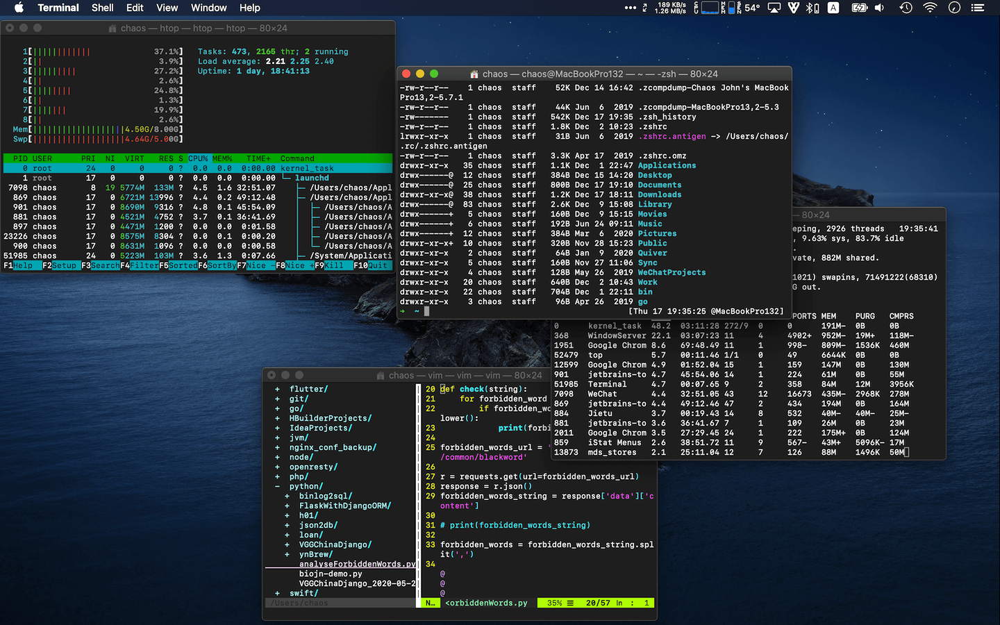
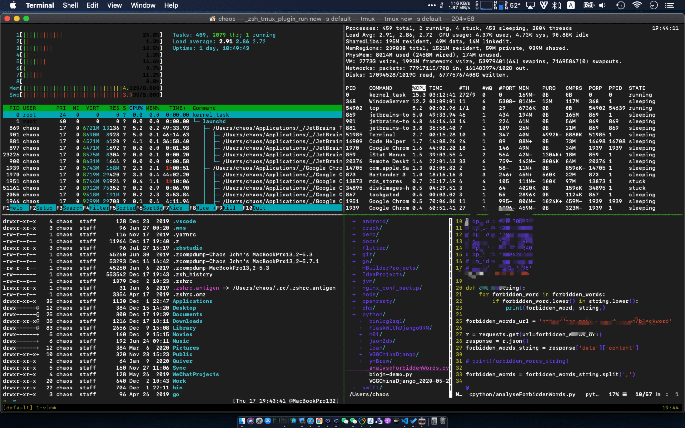
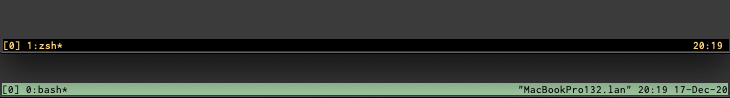

欢迎转载，但请在开头或结尾注明原文出处【blog.chaosjohn.com】
介绍
Tmux 是一个终端复用软件，在没有终端复用软件之前：
- 如果要同时执行多项任务，得开多个终端窗口（
Terminal），远程的话还得在多个终端窗口里发起多条SSH连接（入下图）
 - 如果在远程执行任务的时候，关闭终端，会强制性关闭
SSH连接，进而导致任务执行直接中断
如果用上 Tmux 这样的终端复用软件后：
- 开启一个
tmux session后，可以同时打开多个窗口，每个窗口可以分割为多个窗格，每个窗格都是一个tty（即虚拟终端）
 - 关闭终端，运行在
tmux session的tty中的任务，依旧会保持运行，重新打开终端，还能连接回该 session
笔者自用配置
本文取名为 “传家宝”配置，那可不是说说而已，因为本文内的自定义配置已经陪伴了笔者6年之久了。
为什么要自定义这份配置呢？因为笔者在最初使用过程中，发现很多不顺手的快捷键，所以大部分自定义项都是跟快捷键有关的。
配置文件位于用户主目录下，文件名为 .tmux.conf
先说明一下，Tmux 的前缀键为 ctrl-b，即先按下 ctrl键 和 b键, Tmux 才开始被激活进入快捷键接受模式，比如：
ctrl-b按下后松开，再按一下c，Tmux 就会新建窗口（create）ctrl-b按下后松开，在按一下d，Tmux 就会从当前窗口断开转为后台执行（detach）
自定义窗口下标起始
Tmux 可以新建很多窗口，默认窗口标号为 0，然后才是 1 2 3 ...（窗格也是）
虽然很符合程序思维，但是跟键盘上那一排数字键的顺序不吻合，所以改成 1 开始，然后才是 2 3 4 ...
1 | set-option -g base-index 1 |
自定义快捷键：分割窗格
默认情况下：
- 水平分割：
ctrl-b+"（引号键） - 垂直分割：
ctrl-b+%（百分号键）
改成 - 和 |，更符合行为逻辑
1 | unbind '"' |
最后两行表示，通过 - 和 | 分割出的新窗格，shell 的初始路径为当前路径
自定义快捷键：窗格间移动
默认的情况下，窗格间移动是 ctrl-b + 方向键
由于笔者习惯了 Vim 的方向逻辑，所以也增加 hjkl 作为窗格间导航的快捷键（原方向键也保留）
1 | bind k selectp -U |
自定义快捷键：调整窗格大小
使用 ctrl-b + ctrl-h/j/k/l，用来移动窗格间的分割线方向，达到调整窗口大小的目的（每次移动10行）
1 | bind ^k resizep -U 10 |
自定义状态栏的背景和前景色
默认的背景色为 绿色，前景色为 黑色，笔者分别调整为 黑色 和 黄色
1 | set -g status-bg black |
效果对比入下图：
自定义状态栏的信息显示
默认在状态栏右侧显示 主机名 + 时间 + 日期
因为笔者一般使用 oh-my-zsh，已经配置显示了 主机名 + 时间 + 日期，所以改为只保留 时间（对比见上图）
1 | set-option -g status-right "#(date +%H:%M' ')" |
配合 oh-my-zsh 的 tmux 插件
上面也说了，笔者一般使用 oh-my-zsh，如果开启 tmux 插件，Tmux 的使用体验又会更上一层楼。
开启方法：在 ~/.zshrc 的 plugins=(git) 括号里追加 tmux，空格隔开
它可以：
- 将
tmux attach -t $session_name缩减成ta $session_name - 将
tmux attach -d -t $session_name缩减为tad $session_name - 将
tmux list-sessions缩减为tl
还有其他的缩减，有兴趣的同学可以前往 oh-my-zsh 插件目录看一眼 tmux.plugin.zsh 文件
最后，如果该文对读者有些许帮助，考虑下给点捐助鼓励一下呗😊